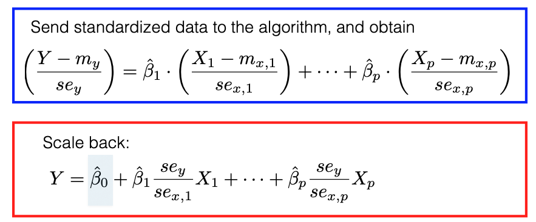

3.2. Regularization
In this lecture, we’ll delve into variable selection using the regularization framework. Previously, we discussed using AIC or BIC for variable subset selection. This process can be framed as the pursuit of minimizing a specific objective function.
Assuming we know or can reliably estimate the error variance, sigma-square, the objective function becomes:
where \(\| \boldsymbol{\beta} \|_0 = \sum_{j=1}^p \mathbf{1}_{\{ \beta_j \ne 0 \}}\) counts the number of predictors in our model. Both AIC and BIC essentially correspond to different choices of lambda. Yet, framing AIC and BIC under this unified objective function doesn’t simplify matters, because it poses the same computational challenges as AIC or BIC. In the worst-case scenario, we’d need to explore all possible subsets of betas.
Next, we’ll introduce two alternative regularization or penalty terms for beta. Ridge regression employs the L2 penalty on beta, while Lasso regression uses the L1 penalty.
The L0 norm’s focus is on the presence or absence of predictors, without regard to their magnitude. However, this isn’t true for the L1 or L2 norms. This can create complications.
For instance, a predictor X_j that measures price in dollars can be transformed to measure in thousands of dollars, which, while only a scale change, can drastically impact the Ridge or Lasso beta estimates. Furthermore, a simple location shift of predictors can influence the intercept. If we penalize the intercept, any minor location change in X or Y will yield different Ridge or Lasso intercepts.
These inconsistencies are problematic. Ideally, the algorithm should yield consistent results regardless of predictor scaling or location changes.
Due to this, it’s customary to preprocess the data. This involves centering and scaling each column of the design matrix to achieve a mean of zero and unit sample variance. We also center Y. This ensures the intercept, when regressing Y against X, is consistently zero. In effect, the design matrix X only contains columns without the intercept.
This preprocessing might seem intricate, but many software packages handle this automatically. They apply transformations before executing their algorithms and then revert the coefficients to their original scale, reintroducing the intercept.
{kind=link}
This intercept beta_0 can be computed using the following formula: